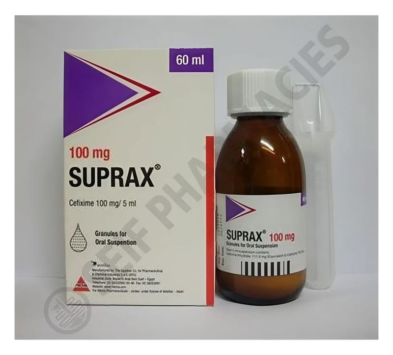

Suprax 100 mg/5 ml Pediatrik Oral Süspansiyon Hazırlamak İçin Kuru Toz, 100 ml

Ne için kullanılır
KT · Bölüm 1SUPRAX®, sefiksim adlı bir ilaç etkin maddesini içermektedir. Bu ilaç sefalosporinler olarak bilinen bir antibiyotik grubuna dahildir.
SUPRAX®, hassas bakterilere bağlı gelişen bazı enfeksiyonların tedavisinde kullanılır. SUPRAX®’ın kullanıldığı enfeksiyonlar şunlardır: • Akut otitis media (orta kulak iltihabı): Bu enfeksiyona, Streptococcus pneumoniae, Haemophilus influenzae ve Moraxella catarrhalis adlı bazı bakterilerin yol açtığı durumlarda, • Akut sinüzit (sinüslerin iltihabı): Bu enfeksiyona, Streptococcus pneumoniae, Haemophilus influenzae ve Moraxella catarrhalis adlı bazı bakterilerin yol açtığı durumlarda, • Akut tonsillofarenjit veya farenjit (boğaz ve bademcik iltihabı): Bu enfeksiyonlara, Streptococcus pyogenes adlı bir bakterinin yol açtığı durumlarda, • Kronik bronşitin akut bakteriyel alevlenmesi (akciğerlere hava taşıyan bronşların iltihabı): Bu enfeksiyona, Streptococcus pneumoniae ve Haemophilus influenzae adlı bazı bakterilerin yol açtığı durumlarda, • Üriner sistemin komplike olmayan iltihabı (mesane ve idrar yollarının iltihabı). • Komplike olmayan gonore (cinsel temasla bulaşan bir enfeksiyon).
Her ambalajda 50 mL veya 100 mL süspansiyon hazırlamak için kuru toz bulunur.
Bu ilacı kullanmaya başlamadan önce bu KULLANMA TALİMATINI dikkatlice okuyunuz, çünkü sizin için önemli bilgiler içermektedir.
• Bu kullanma talimatını saklayınız. Daha sonra tekrar okumaya ihtiyaç duyabilirsiniz. • Eğer ilave sorularınız olursa, lütfen doktorunuza veya eczacınıza danışınız. • Bu ilaç kişisel olarak sizin için reçete edilmiştir, başkalarına vermeyiniz. • Bu ilacın kullanımı sırasında, doktora veya hastaneye gittiğinizde doktorunuza bu ilacı kullandığınızı söyleyiniz. • Bu talimatta yazılanlara aynen uyunuz. İlaç hakkında size önerilen dozun dışında yüksek veya düşük doz kullanmayınız.